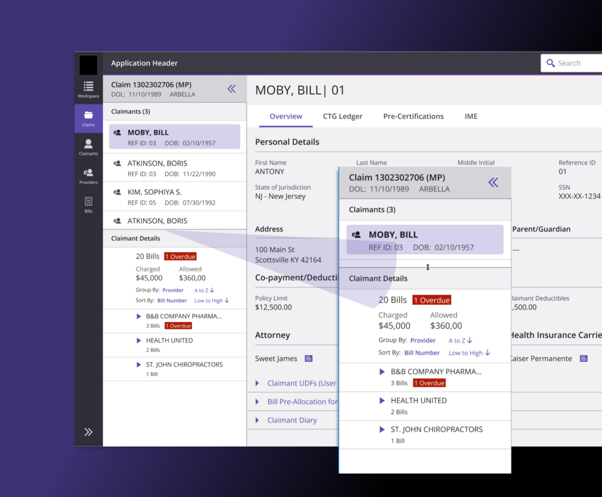
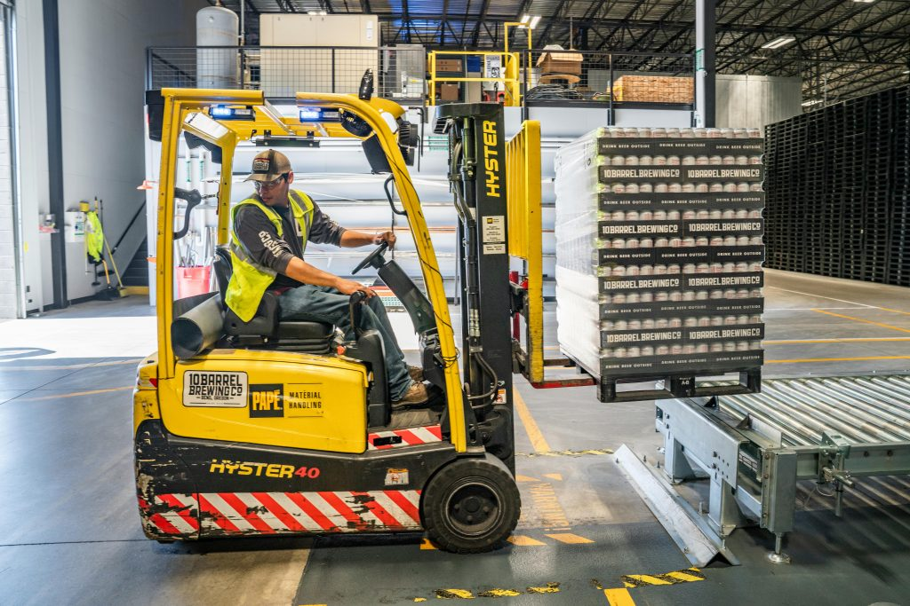

AI made building accessible to everyone. It didn't make products usable, and it didn't make them inclusive. I'm Surya Haridasan, and I design the part the prompt can't reach.
Service blueprints, claim hierarchies, incentive maps. I chart how the whole thing works before a single pixel moves.
A product most people can't use is a broken product. Sociology and economics inform how I read access and power in every flow.
Thinking can be delegated to a machine. Knowing why it's right can't. That judgment is what I bring to the table.

A navigation re-architecture that clarified ownership between global and contextual systems, unified claim hierarchies, and made behavior predictable enough to scale.
Read the case study →Nurses were losing whole shifts to reporting. A rebuilt MRS workflow cut report time from eight hours to under one, so the tool supports care work instead of competing with it.
Read the case study →Led fifteen designers on a MileagePlus proof of concept: personalized itineraries, real-time recommendations, and goal-based rewards that turn loyalty into an adventure.
Read the case study →
A legacy application redesigned around the ground staff who actually use it: fewer bottlenecks, clearer states, faster and less error-prone operations.
Read the case study →